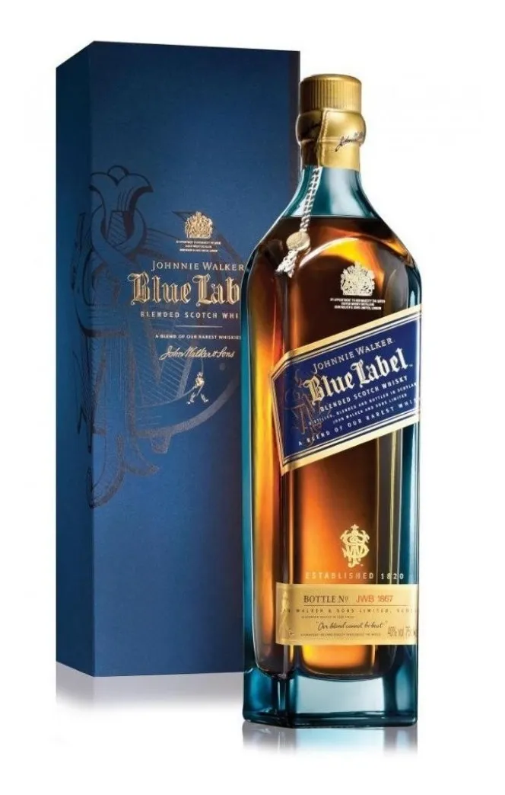
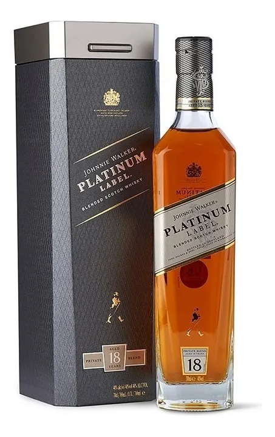

Jhonnie Walker
Sabemos de whisky
WHISKYS DESTACADOS

Jhonnie Walker Blue Label
Ver Producto


Jhonnie Walker Label
Ver ProductoSERVICIOS
- CATA
- BARRA
- BAR TOUR
SOBRE JHONNIE WALKER
Johnnie Walker es una marca de whisky escocés ahora propiedad de Diageo que se originó en la ciudad escocesa de Kilmarnock, East Ayrshire. La marca fue establecida por primera vez por el tendero John Walker.
Johnnie Walker es una marca de whisky escocés ahora propiedad de Diageo que se originó en la ciudad escocesa de Kilmarnock, East Ayrshire. La marca fue establecida por primera vez por el tendero John Walker. Es la marca de whisky escocés mezclado más ampliamente distribuida en el mundo, vendida en casi todos los países, con ventas anuales equivalentes a más de 223.7 millones de botellas de 700 ml.